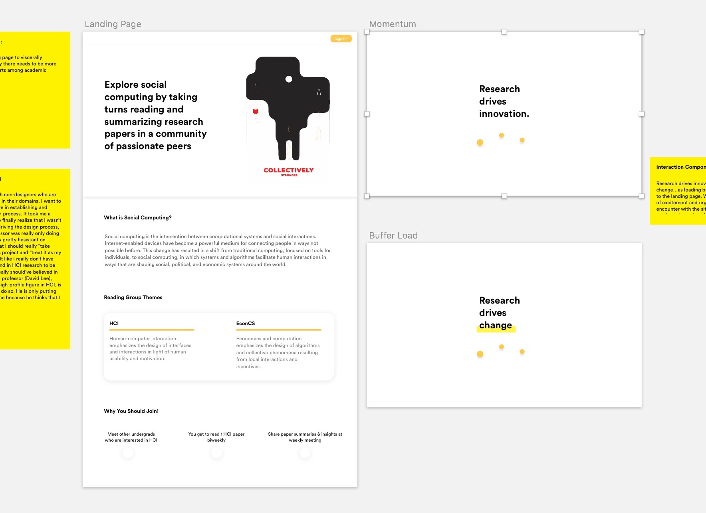
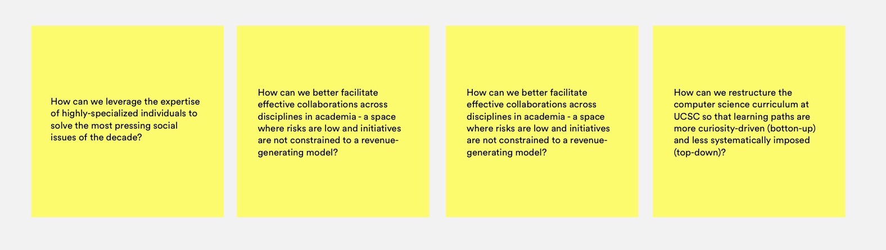
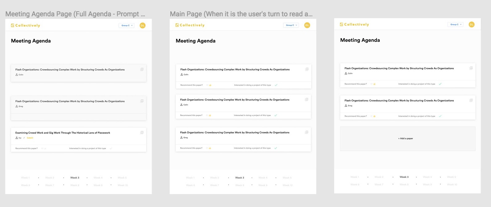
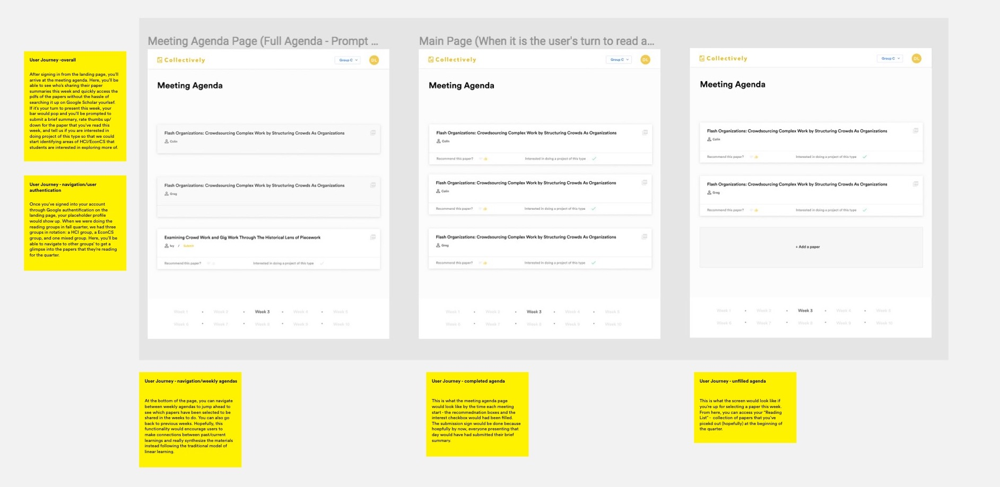
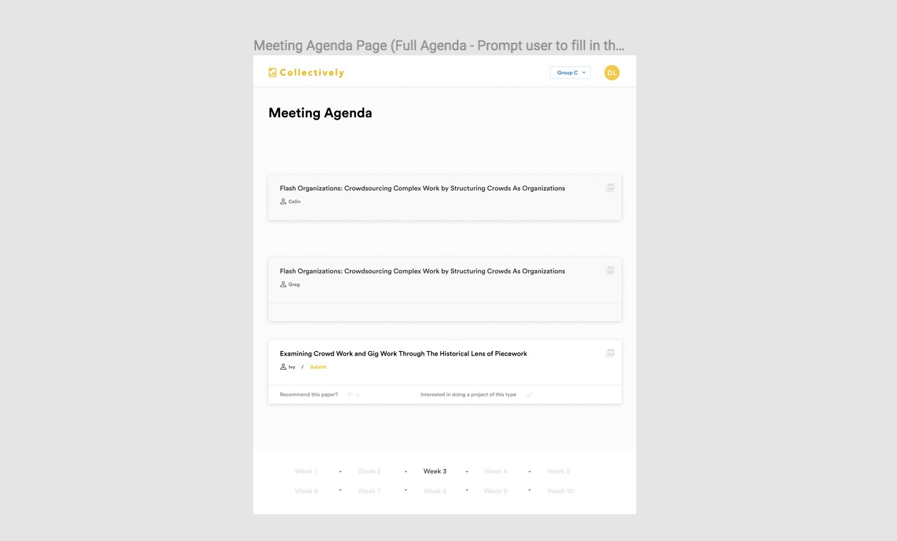

Collectively
Time frame: Fall 2017 - Present
Practiced: UI/UX design, branding, UX research
Tools: whiteboard, Figma
What are the benefits of exposing undergraduate computer science students to research? Is research the source of true innovation? How can we better support Tech4good's quarterly human-computer interaction reading groups?

High-level research questions...

Intro...haven't decided how to write the hook yet
Like every HCI lab, we read HCI papers on a regular basis for recreational purposes. No just kidding - we read them so we can know who our competitions are for CSCW. No just kidding, we read them so that we can find interesting methologies to work off of or build on top of - because why start an idea off from scratch when others have already done some thinking for you? Like every project in David's lab, there's more to this project that it seems. Read on to see what the future of collective knowlege-building might look like.
Different iterations of the Meeting Agenda Page that I've played around with...

Here are some notes on the final design decisions that I've made with my professor David Lee. Each displayed component is a result of hours of consideration and countless iterations fixes/revisits.

A closeup of the final meeting agenda page.This is what it should look like hours before the meeting, papers selected and ratings yet to go. If I had more time, I would've prototyped the UX in Framer or Principle so you, the visitor of this site, wouldn't have to do this much reading!
